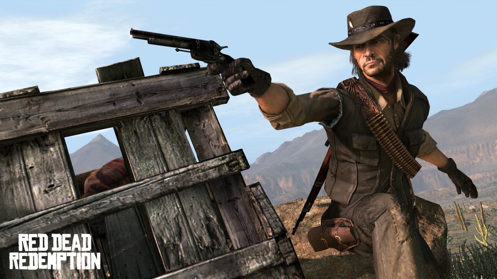

Red Dead Redemption — приключенческий боевик-вестерн от третьего лица с открытым миром и элементами RPG.
Разработана компанией Rockstar San Diego при поддержке Rockstar North, Rockstar NYC, Rockstar Leeds, Rockstar New England и Rockstar Lincoln.
Выпущена 18 мая 2010 года на консоли PlayStation 3 и Xbox 360. Также была выпущена на Xbox One. Вторая игра серии Red Dead
После релиза Red Dead Redemption была высоко оценена критиками, получив 95/100 на MetaCritic для обеих консолей и получив отличные оценки от более 20 рецензий, включая GameSpy, 1Up.com, GamePro, Game Revolution и VideoGamer.
Игра получила высокую оценку за сюжет, презентацию, визуальные эффекты и механику игрового процесса, а с 2013 года — было продано более 13 000 000 экземпляров по всему миру.
Действие игры происходит в Америке в 1911 году. Протагонист игры — Джон Марстон, бывший головорез, оставивший кровавый промысел, вынужден работать на государственных агентов, чтобы убить или захватить живыми его бывших сообщников, включая его «старого друга» — Билла Уильямсона. Если Джон этого не сделает, то пострадает его семья. Герою суждено преодолеть огромное расстояние от западных границ США, где царит хаос и властвуют беспринципные коррумпированные чиновники, а простые поселенцы ведут бесконечную борьбу за выживание, посетить Мексику, пребывающую на грани гражданской войны, и добраться до цивилизованных городов американского севера.
Оружие В Red Dead Redemption, компания Rockstar Games впервые в своих играх использовала «круговой селектор» для выбора оружия, который пришел на замену стандартному перелистыванию всего списка оружия из Grand Theft Auto IV. Данный «круговой селектор» позволяет игроку значительно быстрее выбрать нужное ему оружие. В дальнейшем он был также использован и других играх компании — Max Payne 3 и Grand Theft Auto V. В игре огнестрельное оружие является необходимым для выживания, так как это неотъемлемая часть повседневной жизни на Американском Диком Западе. Так-же никуда не делась механика Dead Eye которая тк-же перешла в дальнейшем в Red Dead Redemtion
Red Dead Redemption Original Soundtrack — саундтрек игры Red Dead Redemption. Музыка в основном написана членом группы Friends of Dean Martinez Биллом Эльмом и экс-членом группы Вуди Джексоном вместе с дополнительными взносами других музыкантов, включая шведского народного музыканта Хосе Гонсалеса.
Rockstar Games совместно с режиссёром Джоном Хиллкоутом создала короткометражный фильм «Red Dead Redemption: The Man from Blackwater» о Джоне Марстоне, главном герое игры.